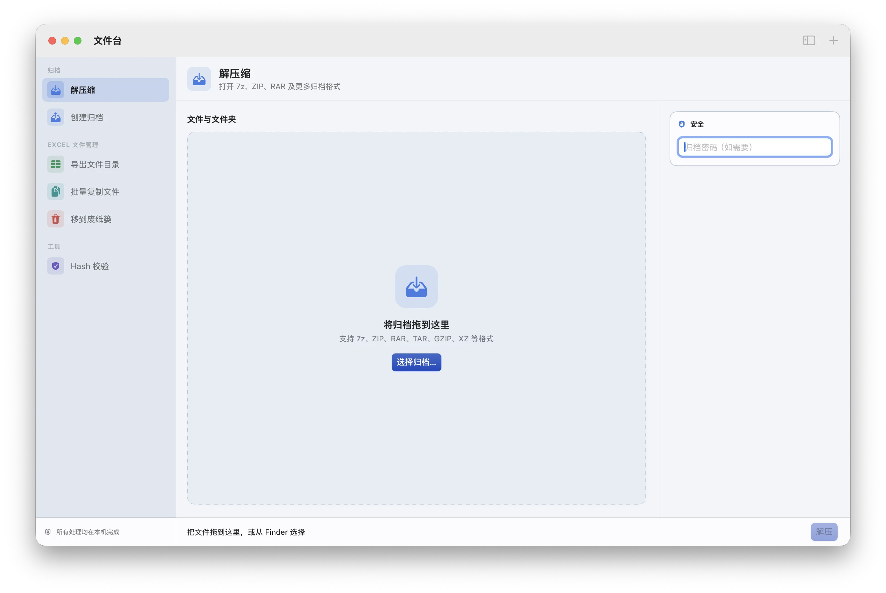

Create and extract
Create 7z, ZIP, and TAR. Read 7z, ZIP, RAR, TAR, GZIP, BZIP2, and XZ, with passwords, dictionary size, custom volumes, and live progress.
 FileNest 文件台
FileNest 文件台
Made for macOS · Everything stays on your Mac
Create, extract, and inspect archives in a native interface. Work directly from Finder, then keep Excel-based file management and hash verification in the same app.

More than an extractor
Archive and file-list tools share one native macOS interaction system.
Create 7z, ZIP, and TAR. Read 7z, ZIP, RAR, TAR, GZIP, BZIP2, and XZ, with passwords, dictionary size, custom volumes, and live progress.
Skip the main window. Extract beside an archive, create 7z or ZIP files, or export a folder inventory to XLSX on your Desktop.
Export directory inventories, preview and batch-copy paths from XLSX, or move matching files safely to the macOS Trash.
Compute MD5, SHA-1, SHA-256, and SHA-512 locally, then compare a file against an expected digest.
A shorter path
Quick tasks open dedicated windows without flashing the main app or pulling you away from the current folder.
Choose one or more files, folders, or archives in Finder.
Pick extraction, archive creation, or Excel inventory export from the context menu.
Review parameters and continuous progress, then reveal the output in Finder.
Open without extracting
The archive browser presents one folder level at a time with familiar file-type icons. Open folders, search, and extract only when ready.

Capability comparison
FileNest complements Finder with advanced archive and file-work capabilities.
Open, transparent, buildable
FileNest has no file uploads and no telemetry. The application source is public, with explicit notices for the archive engine.
The Swift application code uses the permissive MIT License and can be studied, modified, and redistributed.
Read the license →The 7-Zip engine and derivative bridge are dynamically loaded under the GNU LGPL. RAR decoding is also subject to the unRAR restriction.
Read third-party notices →